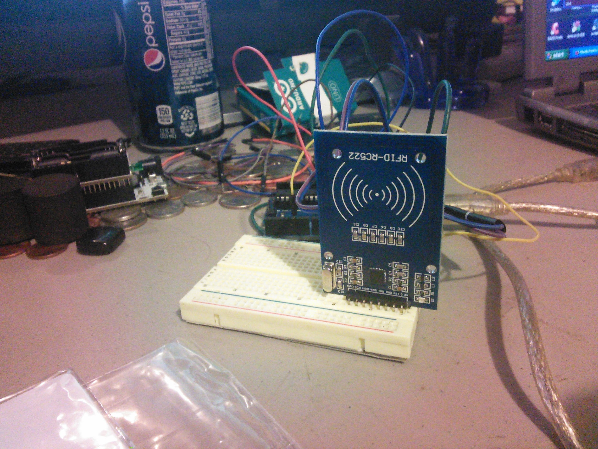
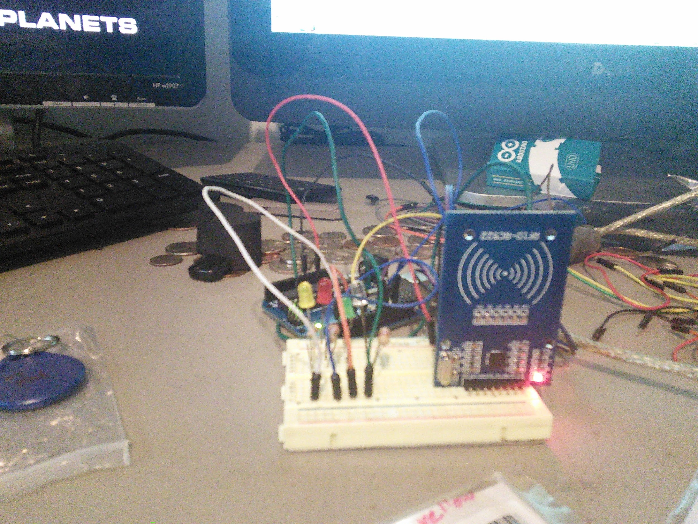
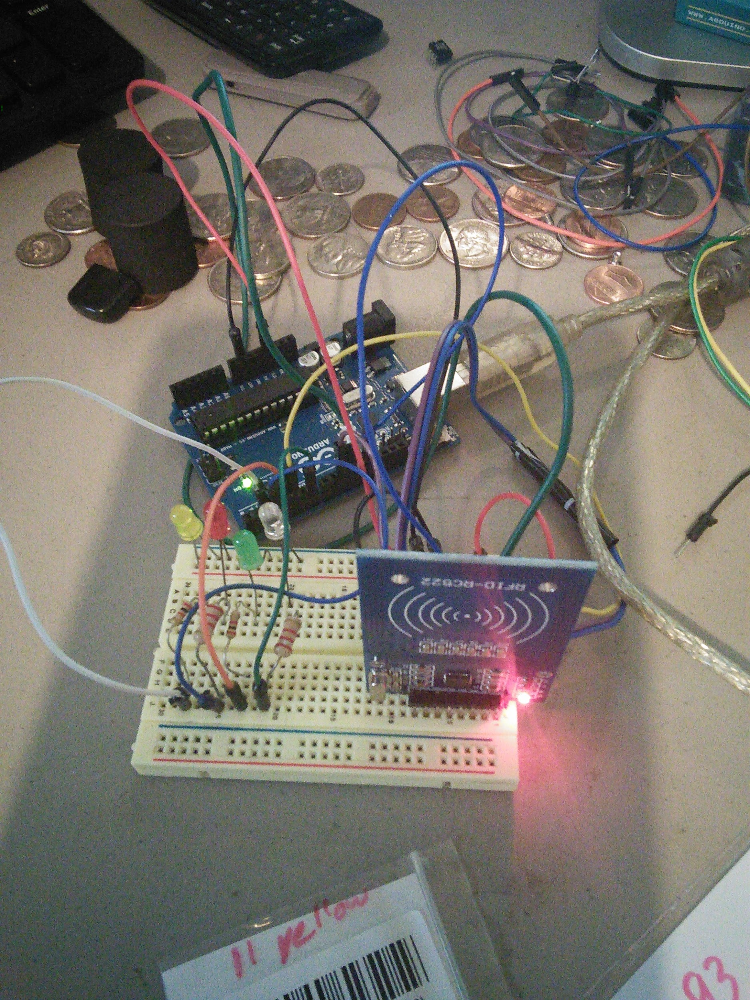
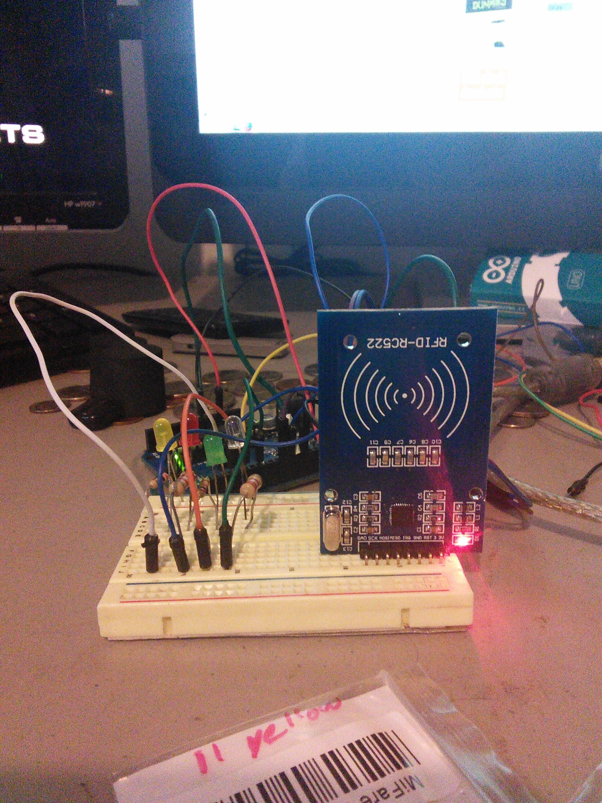

3/8/2014 Arduino Uno bootloader and the Mifare RFID reader/writer RC522
1. Project Reference Number / Title:
- 20140308 Arduino Uno bootloader and the Mifare RFID reader/writer RC522
Mar 8, 2014
RFID - what is it? How does it work? what can you do with it? and how to use RFID with an Arduino.
RFID is a wireless non-contact use of electromagnetic fields to transfer data. With the uses of Identifying and tracking inventory, or other objects. There are several standards in use with RFID, too many to go into here. There is also active RFID and Passive RFID, passive is probably the most common. Active RFID has a greater range. RFID tags can contain information and be both read from and written too (Depending on the tag, and which version of tag you have.)
This is not a new technology, having origins dating back to 1945. A “modern” passive radio transponder with memory was 1st patented in 1973, this would be the great grand father of modern RFID.
RFID works in several different frequencies, with probably the most common (at least consumer level) being 13.56 MHZ (HF) using the MIFARE ISO/IEC 14443 standard, but other frequencies include 120 -150 kHZ (LF) which is currently unregulated, 433 Mhz (UHF) Short Range Devices also used for defence and active tags, 865 - 868 Mhz in Europe & 902-928 Mhz in North America and using various standard
2.4 to 5.8 Ghz - this is also various standards, and active RFID
3.1 to 10 Ghz requires semi-active or active tags and appears to not be fully implemented at this time.
A “new” type of RFID is currently the defacto standard, and is being wildly used in cell phones and tablets - Near Field Communication (NFC) - NFC is ISO/IEC 14443.
NFC tags generally speaking can hold more information then there early RFID counterparts.
You can also find NFC/RFID in a lot of credit cards, any place you see a card reader that you just have to tag is using RFID. The Middletown Library and I would think the West Chester branch use RFID tags in their books, they have for years but I’m not sure why they do it.
How does RFID work?
It’s really pretty simple (as easy as 123) - Remember in school you probably learned about Magnetic lines of force (magnetic poles North and South), probably you also remember that when a current is passed through a coil you can create a electro-magnet. And when you put that near another coil of wire you INDUCE a voltage on the 2nd coil? Well that is how this works, the RFID reader has a coil, that is powered on making a little electromagnet probably not strong enough to pickup any thing, but still it’s there. The tags are also coils, and by passing the tag in front of the reader you INDUCE a voltage. The tags also have a chip in them that contains a tiny transceiver, and an ID code (each tag has a unique code, thou you can clone tags if needed, not going into how to do that beyond the scope). Depending on the tag it may contain other information as well. The reader also has a transceiver in it and receives information when the tag transmits. In passive system the tag needs to be pretty close to the reader, In an active system the tag can be a few feet to a few hundred feet away from the reader.
Which brings us to what can you do with RFID?
Alot really, one of the big things is tracking, and managing inventory, Everything in the store has an RFID tag, you pickup an item and walk out the store, the active scanners at the door - buzz - the system knows you didn’t pay for that item because it didn’t get scanned at the checkout. (OK, that’s just one example) I think this is probably why the libraries have RFID tags in the books, but I don’t know why they don’t use them for check ins/check outs (They also have bar codes on the books for check in/check out) Any way, off on a little tangent there.
Already said above, visa/master card/amex all have started to put RFID chips in credit cards for Fast Pay (NFC) BTW you can use your NFC enabled cell phones for fast pay if you have your account attached to your phone.
The auto industry has been using RFID tags for years, in both the manufacture and parts replacement in cars. - A new car is sitting on the line waiting to have a door, using an active tag the robots can find out what is missing, what color and just about anything else about the car it’s making - updating the tag, and moving down to the next robot in the line. Parts bins are marked with RFID tags so the robots can find them when they are needed.
Other uses, Tagging animals with owner information, toll collection (active readers mostly).
and countless other uses.
Using RFID with an Arduino:
There are many different RFID readers available for the Arduino, they all seem to work the more or less the same. (Some are capable of writing to a tag others are not)
Mine is a cheap sub-\$5 reader that came with two tags, a Mifare 522 which is one of the most common out there. it uses a SPI interface.
Unfortunately, there is not a whole lot of information out about the model I have, in fact I only found 2 website, both were virtually the same.
https://sites.google.com/site/arduinomega2560projects/home/level-1/arduino-rfid-rc522
and
http://www.grantgibson.co.uk/2012/04/how-to-get-started-with-the-mifare-mf522-an-and-arduino/
There wasn’t a library to use, and I am still trying to make heads and tails out of the code they provided, but I think you send command to the reader in hex and wait for a reply.
From what I can tell thou, you pass a tag in front of the reader, and the arduino will send (serial console) the 5 ID strings contained in the tag.
If the right tag is used - It will say “Hello Dave” or “Hello Grant”. One of the sites is also putting a “2” in front of the 1st set of IDs (not sure why but I removed that front the code as it just seemed strange to be there)
Both websites also made a mistake about the pin map
They have a pin called SS mapped to Arduino pin 10, my board doesn’t have a pin marked SS but the pin marked SAD seems to work.
Jeremy is using a RFID reader that is based off a zigbee or works in a zigbee socket, also his has a “real” coil of wire, and his code is very different as well. So each reader must be different.
Here is the link to his setup:
http://www.jeremyblum.com/2011/07/08/tutorial-12-for-arduino-rfid-card-reading/
I think by Thursday I will have a demo working that will turn on and off LEDs using various tags I have.
Final thoughts: Most RFID systems need to keep up with the tag ID numbers which would be contained within a database, however it is possible to have simple system with just a few tags (or one that doesn’t need updated often) that doesn’t require a database. And this is the type an Arduino is great for, simple RFID control of lighting or opening a door.
Some pictures of my setup:
{width="6.5in" height="4.875in"}
 {width="6.5in" height="8.666666666666666in"}
{width="6.5in" height="8.666666666666666in"}
{width="6.5in" height="4.875in"}
 {width="6.5in" height="4.875in"}
{width="6.5in" height="4.875in"}
{width="6.5in" height="8.666666666666666in"}
{width="6.5in" height="8.666666666666666in"}